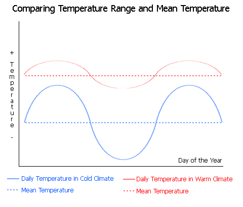
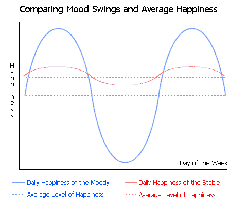

Similarities Between Weather and Happiness (Chart)
by phil on Tuesday Apr 13, 2004 9:53 PM
really random theory


I learned in my evolution class today that hotter, more tropical climates have less fluctations in temperature than do colder climates. Therefore, climate changes not just impact the average temperature but also the range of temperatures. And since wider temperature fluctuations can cause more variability in the supply of food, life becomes twice as hard for animals: once because its colder, and another time because food supply is not stable.
This double-impact is also in the relationship between mood swings and happiness. Emotional dips are bad in general, but the presence of high emotional instability also reduces the overall level of happiness. Therefore, emotional dips are a double-whammy.*
This parallel between happiness and temperature demonstrates the tight coupling in some systems between the variance and the average.
Why the climate changes are interesting for evolution:
Warmer rainforests covered Earth during the time period (early Paleocene 65-34 million years ago) when modern primates evolved. Because these rainforests also had less temperature fluctations, primates were therefore adapted to stable supplies of plants and fruits. When Earth's climate cooled in the Oligocene Era (34 million years ago), temperature fluctuations increased in colder regions, reducing flora tenability, and therefore making it difficult for primates to survive. Many of the primates went extinct except those living in existing rainforests and the newly evolved anthropoids (apes, chimps, humans). These anthropoids compensated with other evolved skills, such as social skills, to make up for the instability of food supply.
* Emotional highs do not have the same effect of raising the average; rather its the absolute fluctuation that affects the average.
On a separate note: I recognize that this is kind of a crackpot parallelism. I'm just appreciating the important relationship between variances and averages; usually we overlook how modifying the variance of a system can also have an impact on the average (and vice-versa).
Comments
Bob said on April 14, 2004 12:37 AM:
I'd like to see a graph comparing Palo Alto weather to the BlogFabric ... possible?
brandon said on April 14, 2004 3:01 AM:
it would be interesting to see a graph of mean happiness as compared with mean temperature - although i suppose there hasn't been much research into the subject.
garret said on April 14, 2004 11:16 PM:
OK, so I live in Nashville and the weather here is sort of manic depressive. For instance, yesterday it got down to 32 and tomorrow it's going to get up to about 80. And it was warm a week ago. Anyway, this really screws with my moods and everyone elses. It seems like people are generally more polite, relaxed, and freindly when it's warm and sunny. However, in order to be consistently happy, you have to have constant nice weather. When it goes up and down all the time like it does in the spring and fall over here, nobody knows how they are supposed to feel and we all end up confused, needing prozac (see "Is Satan Lurking in the FDA?") So, to conclude, in order to be happy, we must all move to San Diego.
Thanks
brandon said on April 15, 2004 3:19 AM:
i live in connecticut. trust me, it's no better up here. that's sort of the way i feel (though bad weather does not always get me down, long periods of it sometimes become frustrating). that's why i was wondering.
on a side note: do you think people in temperate zones are more likely to be afflicted by SAAD?